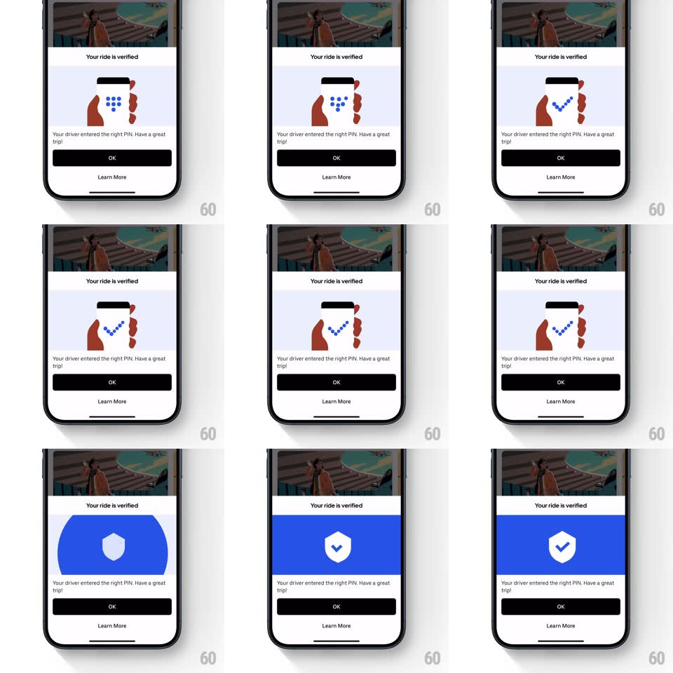

Media
Frame-by-frame

Rebuild this animation 1:1: Uber's ride-verified sheet - the PIN-entry illustration animates its dots into a checkmark, the panel floods solid blue, and a white shield-with-tick badge scales into center.

Rebuild this animation 1:1: Uber's ride-verified sheet - the PIN-entry illustration animates its dots into a checkmark, the panel floods solid blue, and a white shield-with-tick badge scales into center. ## Integration Integration: stack-agnostic spec - springs given as stiffness/damping, timed motions as duration + curve; map every value to your framework and animation library of choice. ## Scene A bottom sheet under a hero photo: "Your ride is verified" title, an illustration of two hands holding a phone with a PIN grid, the copy "Your driver entered the right PIN. Have a great trip!", a black OK button, and a Learn More link. ## Motion spec Pattern: illustration morph into shield badge, ~1.2s. - PIN dots: the blue dots in the phone's keypad rearrange into a checkmark shape (each dot travels its own short path, 400ms, ease-in-out, staggered 30ms) - the PIN becomes the tick. - Flood: a blue circle grows from the check's center (scale 0 -> cover, 350ms, ease-in) until the whole illustration panel is solid blue. - Badge: the white shield pops into center (scale 0 -> 1.1 -> 1, spring ~320/18, 400ms) and its tick draws on (stroke reveal, 250ms). - Title, copy, and buttons stay static throughout - only the illustration panel animates. ## Calibration - The dots read as a check before the flood starts - a beat of recognition. - The flood is centered on the check, not the panel. ## Reduced motion Crossfade from illustration to the shield on blue (300ms). ## Don't miss - The same dots form both the PIN grid and the check - track them as objects. - The shield tick draws as a stroke, not a fade.